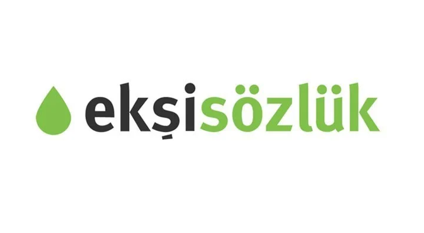
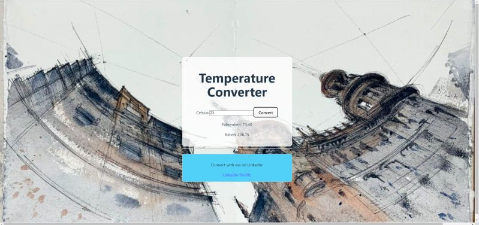
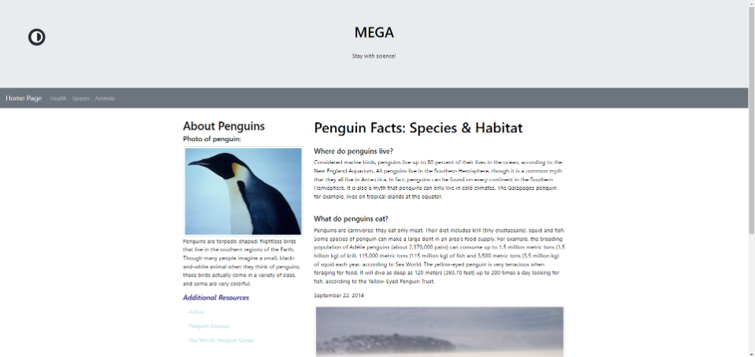
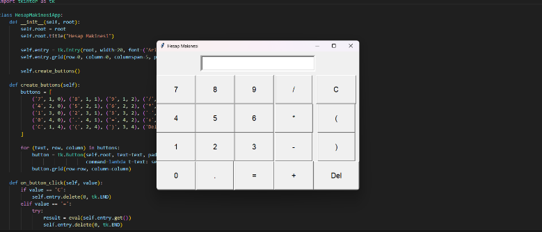

Projelerim

Meram App
Örnek Web Uygulaması: Kullanıcı dostu, dinamik içerik sağlayan bir web uygulaması geliştirdim.

E Store
Örnek Web Uygulaması: API Kullanarak ReactJS ile geliştirdiğim internet mağazası.

Web Scraping - Kitapyurdu
Bot: Kitapyurdu sitesinden verilen linke göre veri çeken uygulama.
Web Scraping - Ekşi Sözlük
Bot: Ekşi Sözlük sitesinden verilen linke göre veri çeken uygulama.
Web Site - Temprature Converter
Örnek Web Uygulaması: Girilen sıcaklık değerinin değiştirilmesi.

Web Site - To Do
Örnek web Uygulaması: Yapılacaklar listesi.
Web Site - Penguins
Örnek Web Uygulaması: Penguenler hakkında web sitesi.
Python - Hesap Makinesi
Uygulama: Python ile geliştirilmiş Hesap Makinesi.